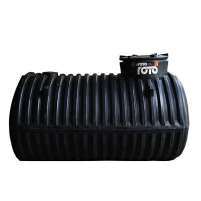

Underground Tanks
Underground Tank 2,000L
2,000 litres
KSh 22,215
Space-saving underground storage for suitable installations.
Compare products, indicative prices and practical selection guidance before requesting a current quotation.

Space-saving underground storage for suitable installations.
Underground water storage for homes and commercial properties.
Large underground storage for high-demand sites.
Large underground storage option for commercial applications.
Underground storage preserves usable surface space and keeps the storage vessel out of sight. It is useful where yards, parking areas or landscaped spaces limit above-ground placement. Only tanks specified for underground installation should be buried.
Excavation depth, soil conditions, surface water, groundwater and vehicle loads above or near the tank affect the installation approach. The correct solution depends on the specific site, so buyers should request the current manufacturer installation instructions before excavation.
The supplied underground range includes 2,000L, 5,000L, 10,000L and 16,000L listings. Beyond capacity, confirm access points for inspection, inlet and outlet arrangement, maintenance access and how the tank will be protected during backfilling.
A normal above-ground cylindrical tank should not be treated as an underground tank. Soil pressure and installation loads differ from above-ground use. Choose a product designed for buried conditions and follow the specified installation method.
Ask for exact product dimensions, current price, stock, delivery, excavation guidance, bedding or base requirements, backfill instructions and whether specialist installation support is recommended for your site.
Buried storage often works with pumps because gravity access is limited. Decide where the pump, level controls and electrical connections will sit before backfilling. Keep equipment accessible for service and protect electrical components from water.
Do not assume the ground above the tank can carry buildings or vehicles. Any surface loading should follow the specific installation design. Landscaping, paving and access covers should preserve inspection and maintenance routes.
Check delivery to your town · Browse all Roto tank sizes and prices · Read tank buying FAQs